Capítulo 5 Realimentação de estados
A principal técnico de controle em espaço de estados é o que chamamos de “realimentação de estados”.
A estratégia básica é fazer a lei de controle \(u\) ser proporcional ao vetor de estados. \[\begin{align*} u = -\mathbf{Kx} \end{align*}\]
Isto lembra um pouco o controle proporcional: realimentação negativa e o controlador é apenas uma constante. Mas a diferença básica é que, como o \(\mathbf{x}\) é um vetor, o controlador \(\mathbf{K}\) tem que ser um vetor também.
O sinal de controle é um escalar. Sendo \(\mathbf{x}\) um vetor coluna de \(n\) elementos, então \(\mathbf{K}\) deve ser um vetor linha de \(n\) elementos. Assim: \[\begin{align*} \mathbf{K}= \left[\begin{array}{cccc}K_1 & K_2 & \ldots & K_n\end{array}\right] \end{align*}\]
O objetivo inicial da realimentação de estados é fazer com que os estados do sistema caminhem para zero (ponto de equilíbrio) a partir de um estado inicial \(\mathbf{x}(0)\neq \mathbf{0}\), em regime permanente (isto é, passado um longo tempo). Esse problema é chamado de regulação.
É possível mostra que se o controlador é capaz de fazer regulação de estados, podemos fazer a saída atingir qualquer valor, que é o objetivo do sistema de controle.
Observação importante: para o algoritmo funcionar supomos que todos os estados são conhecidos para calcular a ação de controle.
Isso quase sempre não é verdade. Os estados são grandezas internas que, às vezes, nem conseguimos medir. Mas mesmo quando é possível, pode não ser economicamente viável comprar sensores para medir todos os estados (um sistema de ordem elevada). O único sinal que está disponível, por definição, é o sinal de saída.
Na prática o que se faz é construir um sistema auxiliar que forneça uma estimativa dos estados reais a partir do sinal de saída. Esse sistema é conhecido como estimador ou observador de estados. O projeto e análise do observador de estados será visto mais a frente.
Por enquanto vamos considerar que é possível medir todos os estados do sistema para fazer a realimentação
5.1 Análise da realimentação de estados
Para entender como projetar o controlador, precisamos entender o que acontece com o sistema quando a estratégia é implementada.
Seja um sistema: \[\begin{align*} \mathbf{\dot{x}} &= \mathbf{Ax+B}u \end{align*}\]
Se usarmos a lei de controle \(u = -\mathbf{Kx}\), a equação deixará de ter entrada, podendo ser resolvida a partir da condição inicial.
\[\begin{align*} \mathbf{\dot{x}} &= \mathbf{Ax+B(-Kx)}\\ &= \mathbf{Ax-BKx}\\ &= \mathbf{(A-BK)x}\\ \mathbf{\dot{x}} &= \mathbf{A}_m \mathbf{x} \end{align*}\]
Vamos chamar matriz \(\mathbf{A}_m\) de “matriz de malha fechada”.
A última equação é uma EDO que não possui entrada, então só tem sentido resolvê-la para uma condição inicial \(\mathbf{x}(0)\) diferente de zero.
A condição necessária para que os estados do sistema caminhem para zero em regime permanente é apenas que o sistema em malha fechada seja estável, isto é, todos os autovalores da matriz \(\mathbf{A}_m\) devem ter parte real estritamente negativa.
Além de estabilidade, é também desejado que a convergência dos estados para zero seja feita com critérios de velocidade e oscilação específicos do projeto. Isso é equivalente a satisfazer as condições de overshoot, tempo de acomodação e dominância.
As condições de projeto são definidas em termos de pólos de malha fechada bem selecionados. Esses pólos determinam um polinômio de malha fechada \(\alpha (s)\).
Sendo assim, o problema de regulação é enunciado como: achar a matriz \(\mathbf{K}\), tal que estejam no semi-plano esquerdo todas as raizes da equação: \[\begin{align} \det (s\mathbf{I-A_m})= \det (s\mathbf{I-A+BK})=\alpha (s) \end{align}\]
Exemplo 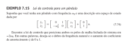
Problema de segunda ordem, então: \(\mathbf{K} = \begin{bmatrix} k_1 & k_2\end{bmatrix}\).
Matriz de malha fechada: \[\begin{align} \mathbf{A-BK} = \left[\begin{matrix}0 & 1\\- \omega_{0}^{2} - k_{1} & - k_{2}\end{matrix}\right] \end{align}\]
Polinômio característico de malha fechada: \[ |s\mathbf{I-A+BK}| = \omega_{0}^{2} + k_{1} + k_{2} s + s^{2} \]
Polinômio mônico desejado, com dois polos em \(-2\omega_0\): \[ \alpha(s) = 4 \omega_{0}^{2} + 4 \omega_{0} s + s^{2} \]
Igualando termo a termo: \[\begin{align} k_1 + \omega_0^2 &= 4\omega_0^2 \Rightarrow k_1 = 3\omega_0^2\\ k_2 &= 4\omega_0 \end{align}\]
O livro mostra uma simulação da resposta desse sistema para \(\omega_0=1\).
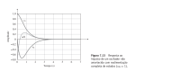
Repare que os gráficos mostram, em função do tempo, os dois estados. Note que nenhum dos sinais oscila. Isso porque as características dos pólos que foram alocados são válidas para todos os estados e a saída do sistema.
Exercício
Ache a forma de controlador do sistema \[\begin{align} G(s) = \frac{20}{(s+1)(s+2)} \end{align}\]
Depois, projete um controlador de realimentação de estados que posicione os pólos em \(-3\pm j5\)
5.2 Forma canônica de controlador
O exemplo anterior ilustra bem a solução do problema de realimentação de estados. Porém, ele é simples demais:
- Ele é de ordem baixa (2). Na prática, os sistemas podem ser de ordem bem mais elevada -Em um problema de ordem mais alta, o trabalho seria muito maior e a solução desenvolvida, inviável
- Além disso, em um problema real temos também que nos preocupar com questões numéricas de arredondamento.
A primeira forma de lidar com problemas de ordem mais alta é transformar o sistema para forma canônica de controlador.
Usar essa forma é vantajoso porque ela simplifica as equações dos ganhos na hora que igualamos os polinômios desejado e de projeto. Isso permite encontrar os ganhos com equações mais simples, geralmente fazendo substituições sucessivas.
Normalmente, a forma mais fácil de mudar para a forma de controlador é achando a função de transferência do sistema e usando as regras práticas de inspeção do numerador e denominador.
Isso pode ser um pouco trabalhoso para sistemas de ordem elevada.
5.3 Método de Ackermann
Uma maneira mais direta e geral de projetar a realimentação de estados é usar o método de Ackerman. Ele consiste de aplicar a expressão: \[\begin{align} \mathbf{K} = \left[\begin{array}{ccccc}0&0&\ldots & 0 & 1\end{array}\right]\mathbf{\mathcal{C}}^{-1}\alpha_c(\mathbf{A}) \end{align}\]
onde \(\mathbf{\mathcal{C}}\) é a chamada matriz de controlabilidade do sistema \[\begin{align} \mathbf{\mathcal{C}} = \left[\begin{array}{ccccc}\mathbf{B}&\mathbf{AB}&\ldots & \mathbf{A}^{n-2}\mathbf{B} & \mathbf{A}^{n-1}\mathbf{B}\end{array}\right] \end{align}\] e \(\alpha_c(\mathbf{A})\) é uma matriz construída pela expressão: \[\begin{align} \alpha_c(\mathbf{A}) = \mathbf{A}^{n}+\alpha_1\mathbf{A}^{n-1}+\alpha_2\mathbf{A}^{n-2}+\ldots++\alpha_n\mathbf{I} \end{align}\]
Note que \(\alpha_c(\mathbf{A})\) é o polinômio de malha fechado desejado, mas no lugar de \(s\) temos a matriz \(\mathbf{A}\) de malha aberta do sistema.
Observação: a solução do problema só existe se pudermos inverter a matriz de controlabilidade. Logo, a invertibilidade é condição necessária para o regulação do sistema. Normalmente, o primeiro passo de um projeto de controle é verificar se ele é controlável.
O método é trabalhoso, mas fácil de implementar no computador. Em Python temos a função “acker()” da biblioteca control que faz o processo automaticamente (sem precisar fornecer a forma de controlador), que funciona bem para sistemas de até 10a ordem e preferencialmente com pólos de malha fechada não-repetidos.
Para problemas mais complexos, recomenda-se o uso da função “place()” da biblioteca control, ou “place_poles()” da biblioteca scipy.signal.
Nota: essas funções só funcionam para problemas numéricos.
Exemplo:
Matriz de controlabilidade: \[\begin{align} \mathcal{{C}} &= \begin{bmatrix} \mathbf{B} & | & \mathbf{AB}& \end{bmatrix} = \left[\begin{matrix}0 & 1\\1 & 0\end{matrix}\right] \end{align}\]
Inversa: \[\begin{align} \mathcal{{C}}^{-1} &= \left[\begin{matrix}0 & 1\\1 & 0\end{matrix}\right] \end{align}\]
Note que, neste caso, a inversa é a própria matriz.
Matriz \(\mathbf{A}\) aplicada ao polinômio \(\alpha\): \[ \alpha(\mathbf{A}) = 4\omega_0^2\mathbf{I} + 4\omega_0 \mathbf{A} + \mathbf{A}^2 = \left[\begin{matrix}3 \omega_{0}^{2} & 4 \omega_{0}\\- 4 \omega_{0}^{3} & 3 \omega_{0}^{2}\end{matrix}\right] \]
Fórmula de Ackerman: \[\begin{align} \mathbf{K} = \begin{bmatrix} 0 & 1 \end{bmatrix} \, \left[\begin{matrix}0 & 1\\1 & 0\end{matrix}\right] \, \left[\begin{matrix}3 \omega_{0}^{2} & 4 \omega_{0}\\- 4 \omega_{0}^{3} & 3 \omega_{0}^{2}\end{matrix}\right] = \left[\begin{matrix}3 \omega_{0}^{2} & 4 \omega_{0}\end{matrix}\right] \end{align}\]
Solução numérica com Python:
import control as ct
import numpy as np
w0 = 1
A = np.array([[0, 1],[-w0**2, 0]])
B = np.array([[0],[1]])
polos = [-2*w0, -2*w0]
K = ct.acker(A,B, polos)
print(K)## [[3. 4.]]A fórmula de Ackermann permite posicionar os pólos de malha fechada em qualquer lugar desejado, desde que a matriz de controlabilidade possua inversa.
Isso torna o projeto mais direto, comparado por exemplo, ao método de projeto com LGR, onde o posicionamento dos pólos com controle proporcional fica restrito ao lugar geométrico.
No entanto, isso é possível devido à hipótese forte de que todos os estados estão disponíveis para realimentação.
Exercício
Use Ackermann para projetar um controlador para o sistema \[\begin{align} G(s) &= \frac{30}{s(s+1)^2} \end{align}\]
Posicione os pólos em \(-4\pm j4\) e \(-12\).
5.4 Introdução da referência
Até agora vimos como resolver o problema da regulação de estados apenas para zerar o estado final. No entanto, o objetivo do controle é fazer a saída rastrear a referência \(r\).
Uma forma simples de fazer isso é usando o sinal de controle: \[\begin{align*} u &= -\mathbf{Kx}+Nr \end{align*}\] onde \(\mathbf{K}\) é o vetor de ganhos conforme já definimos e \(N\) é um ganho a se determinar.
Se usarmos esta lei de controle, a equação de estados do sistema em malha fechada fica:
\[ \dot{\mathbf{x}} = \mathbf{(A-BK)x} + \mathbf{B}N\,r \]
A equação de saída fica: \[ y = (\mathbf{C}-D\mathbf{K})\mathbf{x}+DN\,r \]
A função de transferência do sistema da entrada de referência \(r\) para a saída \(y\) é:
\[ G(s) = (\mathbf{C}-D\mathbf{K})(s\mathbf{I-A+BK})^{-1}\mathbf{B}N+DN \]
Se quisermos que o sistema rastreie a referência em regime permanente, \(y=r\), o ganho DC do sistema deve ser unitário, isto é, \(G(0)=1\). Então fazemos \(G(0)=1\) na equação e resolvemos para \(N\). O resultado é:
\[ N = \frac{1}{(\mathbf{C}-D\mathbf{K})(\mathbf{-A+BK})^{-1}\mathbf{B}+D} \]
Como normalmente o ganho \(D\) é nulo, temos o resultado mais usual:
\[ N = \frac{1}{\mathbf{C}(\mathbf{-A+BK})^{-1}\mathbf{B}} \]
O algoritmo de projeto é, portanto:
- Calcule o vetor de ganhos \(\mathbf{K}\) normalmente, conforme as especificações de projeto
- Use o vetor \(\mathbf{K}\) calculado para determinar \(N\)
- Implemente o algoritmo de controle como: \(u=-\mathbf{KX}+Nr\)
Precisamos apenas usar a expressão: \[ N = \frac{1}{\mathbf{C}(\mathbf{-A+BK})^{-1}\mathbf{B}} \] A saída do oscilador é a posição \(x_1\), logo \(\mathbf{C} = \begin{bmatrix}1 & 0\end{bmatrix}\). Usando o resultado anterior para \(\mathbf{K}\).
\[\begin{align} \mathbf{-A+BK} &= \left[\begin{matrix}0 & -1\\4 \omega_{0}^{2} & 4 \omega_{0}\end{matrix}\right] \\ (\mathbf{-A+BK})^{-1} &= \left[\begin{matrix}\frac{1}{\omega_{0}} & \frac{1}{4 \omega_{0}^{2}}\\-1 & 0\end{matrix}\right]\\ N &= \frac{1}{\mathbf{C}(\mathbf{-A+BK})^{-1}\mathbf{B}} &= \frac{1}{\frac{1}{4 \omega_{0}^{2}}} = 4 \omega_{0}^{2} \end{align}\]
5.4.1 Simulação em malha fechada
É interessante testar o projeto agora usando uma resposta ao degrau. Note que para isso, precisamos definir o sistema em malha fechada.
Substituindo \(u=-\mathbf{Kx}+Nr\) na equação de estados vemos que as matrizes \(\mathbf{A}\) e \(\mathbf{B}\) em malha fechada mudam. A saída permanence a mesma, logo a matriz \(\mathbf{C}\) de malha fechada permanece a mesma.
Em malha fechada (i.e., ganhos realimentados), as equações do sistema ficam: \[\begin{align} \mathbf{\dot{x}} &= \mathbf{(A-BK)x} +\mathbf{B}Nr\\ y &= \mathbf{Cx} \end{align}\]
A seguir resolvemos e simulamos o sistema do exemplo anterior com \(\omega_0=1\).
Imports e sistema
import control as ct
import numpy as np
w0 = 1
A = np.array([[0, 1],[-w0**2, 0]])
B = np.array([[0],[1]])
C = np.array([[1,0]])Alocação de pólos e referência
Matrizes de malha fechada. Repare o uso do símbolo @ para produto matricial.
Relatório de pólos de malha fechada
## Eigenvalue (pole) Damping Frequency
## -2 1 2
## -2 1 2Os pólos foram corretamente alocados. Repare que, por serem reais, o programa considera amortecimento (damping) igual a 1 e a frequência natural é o módulo do pólo.
Zeros de transmissão
## array([], dtype=complex128)O sistema não possui zeros.
Simula o sistema para uma resposta ao degrau unitário. Tempo de simulação é 7 segundos.
Plota os resultados, com algumas legendas
import matplotlib.pyplot as plt
plt.plot(t,y)
plt.grid()
plt.xlabel('Tempo (seg)')
plt.ylabel('Saída')
plt.legend('y')
plt.show()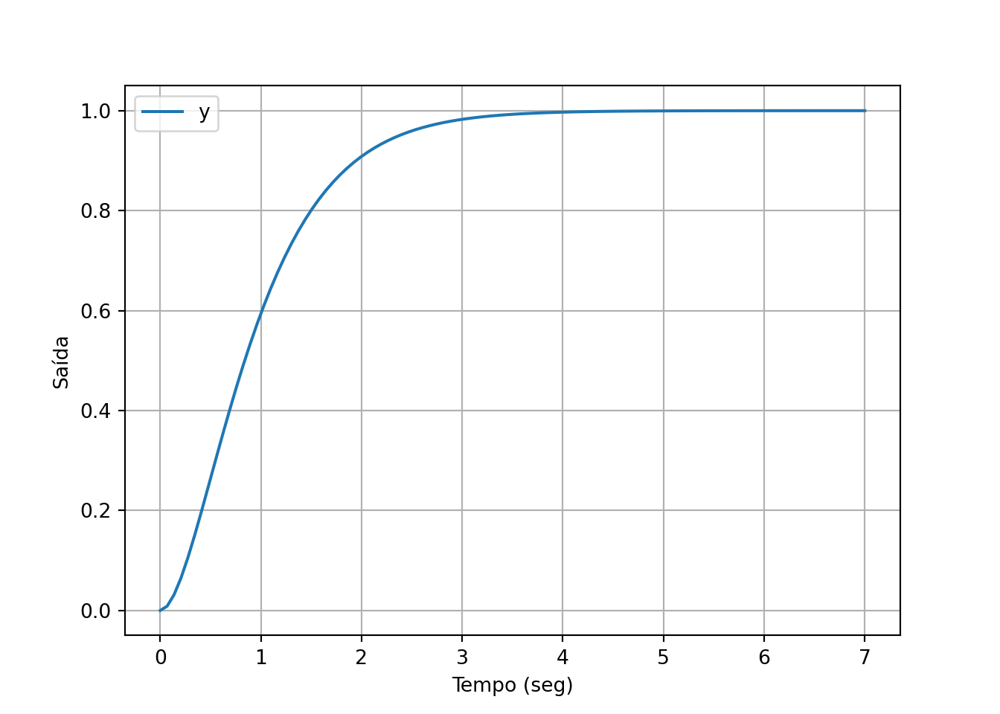
5.5 Escolha dos pólos
O sucesso do controle depende da escolha adequada do polinômio de malha fechada desejado. Esse polinômio deve ser construído tendo em mente todos os pólos de malha fechada desejados, não apenas os dominantes.
Isso é importante quando temos um sistema de ordem maior que 2: os pólos que não serão dominantes devem ser escolhidos suficientemente distantes dos candidatos a dominantes.
Uma regra prática é, após escolher os dominantes, escolher os demais como reais, com a parte real de 3 a 5 vezes maior que a parte real dos dominantes.
Lembre-se, porém, que se o deslocamento dos polos para a nova posição for muito grande, os ganhos do controlador vão aumentar e consequentemente o sinal de controle vai exigir mais energia.
Outra coisa a se ter em mente na hora de escolher pólos de malha fechada são os zeros do sistema. A realimentação de estados não altera a posição dos zeros, isto é, se eles não forem cancelados, eles permanecerão na mesma posição em malha fechada. Agora, se estes zeros estiverem próximos dos pólos dominantes em malha fechada, a dinâmica projetada não irá funcionar corretamente (normalmente o overshoot será mais alto do que o projetado).
Uma forma de lidar com isso é posicionar um pólo extra sobre o zero que está atrapalhando o projeto, mas apenas se o zero for estável.
Note que devido às incertezas e os arredondamentos de projeto, podemos ter que fazer novas escolhas de polos até achar uma combinação que se ajuste ao que precisamos.
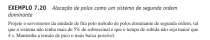
Observe a solução com Python.
# Imports
import control as ct
import numpy as np
# Sistema
A = np.array([ [0, 2, 0, 0, 0],
[-.1, -.35, .1, .1, .75],
[0, 0, 0, 2, 0],
[.4, .4, -.4, -1.4, 0],
[0, -.03, 0, 0, -1] ],dtype=float)
B = np.array([[0],[0],[0],[0],[1]])
C = np.array([[1,0,0,0,0]])
D = np.array([[0]])Pólos desejados, calculados pelos parâmetros físicos
Polos de malha fechada desejados, conjunto completo. Note a forma de gerar os pólos adicionais usando o dominante como referência e o recurso de repetição de elementos de uma lista.
polos_dom = np.array([[p, np.conjugate(p)]])
polos_extras = np.array([[np.real(p)*4]*3])
polos_mf = np.block([polos_dom,polos_extras])Alocação de polos e referência
O vetor de ganhos encontrado é \(\mathbf{K} = \left[\begin{matrix}8.1 & 19.33 & 1.27 & -0.2139 & 5.857\end{matrix}\right]\)
Os valores são um pouco diferentes do livro. Tente descobrir a razão
Simulação em malha fechada:
Amf = A - B@K
Bmf = B@N
Cmf = C
Dmf = np.array([[0]])
# Sistema
sis = ct.ss(Amf,Bmf,Cmf,Dmf)
# Simulação
t,y = ct.step_response(sis,7)
plt.plot(t,y)
plt.grid()
plt.xlabel('Tempo (seg)')
plt.ylabel('Saída')
plt.legend('y')
plt.show()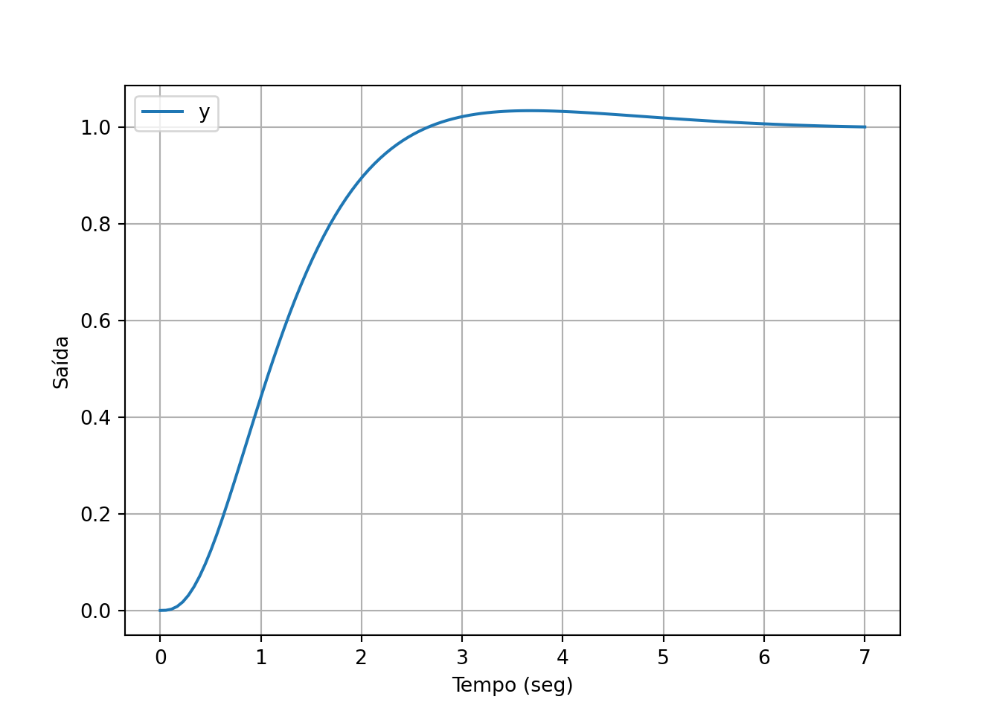
É sempre importante analisar as características do sistema (pólos e zeros), além dos sinais.
## Eigenvalue (pole) Damping Frequency
## -2.459 1 2.459
## -2.459+2.019e-05j 1 2.459
## -2.459-2.019e-05j 1 2.459
## -0.6148 +0.615j 0.707 0.8696
## -0.6148 -0.615j 0.707 0.8696Zeros:
## array([-0.7+0.55677644j, -0.7-0.55677644j])valor máximo de saída:
## 1.0339565325466082Tente explicar o que aconteceu com o projeto em malha fechada. Faça correlação com o gráfico do sinal de saída.
Exemplo:
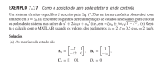
Abaixo apenas o item (b), resolvendo direto com acker()
# Imports
import control as ct
import numpy as np
z0 = 2.
# Declaração das matrizes e do sistema
A = np.array([[-7,1],[-12,0]])
B = np.array([[1],[-z0]])
C = np.array([[1,0]])
D = np.array([[0]])
sys = ct.ss(A,B,C,D)
# Pólos desejados
xi = 0.5
wn = 2
polo = wn*(-xi+1j*np.sqrt(1-xi**2))
# Alocação de polos
K = ct.acker(A,B,[polo, np.conj(polo)])Regulador encontrado: \(\mathbf{K}= \left[\begin{matrix}-3.8 & 0.6\end{matrix}\right]\)
Execute novamente o código com \(z_0=3\) para verificar a variação dos ganhos como no livro. Espera-se que haja um aumento significativo nos ganhos.
Quando um polo e um zero tendem a se cancelar, o sistema tende a perder controlabilidade e isso torna os ganhos mais altos e, consequentemente, o controle fica mais “caro” (puxa mais energia). Vale a observação do livro:
“O sistema tem que trabalhar com mais força para conseguir o controle quando a controlabilidade é fraca.”
Além disso:
“Mover os polos em um longo caminho requer grandes ganhos.”
Isso é observado quando um sistema é naturalmente lento e tentamos deixá-lo mais rápido. Isso normalmente resulta em ganhos grandes (em módulo), o que resulta novamente em um controle “caro”.
5.6 Estimadores de estado
No assunto anterior vimos que a ação de controle no espaço de estados é proporcional aos estados do sistema. Para isso ser possível de calcular, precisamos ter esses sinais disponíveis.
Na prática, uma medição direta dos estados é raramente viável. O número de sensores pode ser grande, o que tornaria o projeto muito caro. Ou simplesmente, os estados não são possíveis de medir.
Para contornar a situação usamos um sistema auxiliar, um subsistema do controlador, que é responsável por fornecer uma estimativa dos estados reais. Esse sistema é chamado de estimador ou observador de estados.
5.6.1 Modelagem do observador
Vamos supor que os estados reais sejam \(\mathbf{x}\) e a respectiva estimativa seja \(\hat{\mathbf{x}}\). Idealmente, queremos que \(\hat{\mathbf{x}}\approx \mathbf{x}\).
Suponha que o sistema real seja: \[\begin{align*} \dot{\mathbf{x}} &= \mathbf{Ax+B}u\\ y &= \mathbf{Cx} + Du \end{align*}\]
O estimador é um sistema que tenta “imitar” o original, usando uma dinâmica parecida: \[\begin{align*} \dot{\mathbf{\hat{x}}} &= \mathbf{A\hat{x}+B}u+\mathbf{L}(y-\mathbf{C\hat{x}}) \end{align*}\]
A interpretação dessa equação é a seguinte:
- O termo \(\mathbf{A\hat{x}+B}u\) é uma tentativa de “imitar” a equação original do sistema.
- O termo \(\mathbf{L}(y-\mathbf{C\hat{x}})\) é um fator de correção do
anterior.
- O termo \(\mathbf{C\hat{x}}\) representa uma estimativa da saída do sistema (é a matriz de saída \(\mathbf{C}\) vezes os estados estimados)
- O termo \(y-\mathbf{C\hat{x}}\) representa, portanto, o erro entre a saída real e a saída estimada.
- O vetor coluna \(\mathbf{L}\) funciona como um ganho proporcional.
Assim, vemos que o estimador é um sistema que “imita” a dinâmica do sistema original, porém, ele corrige o erro da dinâmica usando uma parcela proporcional ao erro de estimativa da saída (que é um sinal que nós realmente conseguimos medir).
Esse termo de correção é o que faz o estimador funcionar. Projetar o estimador é essencialmente calcular o vetor \(\mathbf{L}\), chamado de ganho do estimador.
Se o ganho do estimador for bem projetado, a diferença entre \(\mathbf{x}-\mathbf{\hat{x}}\) cairá rapidamente com o tempo. Ou seja, passado um longo tempo (isto é, em regime permanente), \(\mathbf{x}\) e \(\mathbf{\hat{x}}\) terão os mesmos valores. Matematicamente representamos \(\mathbf{x}\rightarrow \mathbf{\hat{x}}\).
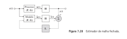
A síntese do estimador é feita da seguinte maneira. Seja \(e = \mathbf{x}-\mathbf{\hat{x}}\) o erro de estimação entre os estados. Combinando a dinâmica do sistema e do estimador, podemos mostrar que: \[\begin{align*} \dot{\mathbf{e}} &= \mathbf{(A-LC)e} \end{align*}\]
Esse é um sistema autônomo (sem entrada), que só depende das condições iniciais. Ele só possui a matriz de estados, que se for estável, fará com que o estado inicial decaia a zero, qualquer que ele seja.
Em outras palavras, mesmo que não conheçamos o estado inicial do sistema para alimentar o estimador, o erro ainda assim irá para zero em regime permanente.
Para que isso aconteça, basta que a matriz \(\mathbf{(A-LC)}\) seja estável, isto é, tenha todos os autovalores no SPE.
Esse é um problema semelhante ao da regulação de estados. A única diferença é a posição das matrizes. No problema de regulação temos \(\mathbf{A-BK}\).
| Regulador | Estimador | |
|---|---|---|
| Determinar | \(\mathbf{K}\) | \(\mathbf{L}\) |
| Dimensões | \(1\times n\) | \(n\times 1\) |
| Equação | \(\mathbf{F-GK}\) | \(\mathbf{F-LH}\) |
Devido às semelhanças, podemos usar as mesmas estratégias e funções Python para projetar o estimador.
Exemplo:
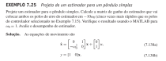
Dados do problema: \[\begin{align} \mathbf{A} &= \left[\begin{matrix}0 & 1\\- \omega_{0}^{2} & 0\end{matrix}\right]\\ \mathbf{C} &= \left[\begin{matrix}1 & 0\end{matrix}\right] \end{align}\]
Observador: \[\begin{align} \mathbf{L} = \left[\begin{matrix}l_{1}\\l_{2}\end{matrix}\right] \end{align}\]
Polinômio do observador: \[\begin{align} s\mathbf{I}-\mathbf{A+LC} &= s\left[\begin{matrix}1 & 0\\0 & 1\end{matrix}\right]-\left[\begin{matrix}0 & 1\\- \omega_{0}^{2} & 0\end{matrix}\right]+\left[\begin{matrix}l_{1}\\l_{2}\end{matrix}\right]\left[\begin{matrix}1 & 0\end{matrix}\right]= \\ &= \left[\begin{matrix}s & 0\\0 & s\end{matrix}\right]-\left[\begin{matrix}0 & 1\\- \omega_{0}^{2} & 0\end{matrix}\right]+\left[\begin{matrix}l_{1} & 0\\l_{2} & 0\end{matrix}\right] = \\ &= \left[\begin{matrix}l_{1} + s & -1\\\omega_{0}^{2} + l_{2} & s\end{matrix}\right] \\ \end{align}\]
Logo: \[\begin{align} |s\mathbf{I}-\mathbf{A+LC}| = \omega_{0}^{2} + l_{1} s + l_{2} + s^{2} \end{align}\]
Polinômio desejado: \[\begin{align} 100 \omega_{0}^{2} + 20 \omega_{0} s + s^{2} \end{align}\]
Igualando termo a termo: \[\begin{align} \omega_{0}^{2} + l_{2} = 100 \omega_{0}^{2} \\ l_{1} = 20 \omega_{0} \end{align}\]
Solução: \[\begin{align} \mathbf{L} = \left[\begin{matrix}20 \omega_{0}\\99 \omega_{0}^{2}\end{matrix}\right] \end{align}\]
Solução numérica
Se adotarmos \(\omega_0=1\), podemos resolver o mesmo problema usando a função de posicionamento de polos acker(). De fato, isso é possível, porque o problema do observador é muito semelhante ao do regulador, mudando apenas os seguintes parâmetros. * Usamos \(\mathbf{F}^T\) ao invés de \(\mathbf{F}\) * Usamos \(\mathbf{H}^T\) ao invés de \(\mathbf{G}\) * Transpomos o resultado para obter o ganho do observador na forma de vetor coluna
# Imports
import control as ct
# Declara as matrizes
w0=1
A = np.array([[0,1],[-w0**2,0]])
C = np.array([[1,0]])
# Posiciona os polos
L = ct.acker(A=A.T,B=C.T,poles=[-10*w0,-10*w0]).TResultado: \(\mathbf{L} = \left[\begin{matrix}20.0\\99.0\end{matrix}\right]\)
5.6.2 Forma canônica de observador
Tal como no caso do regulador de estados, há uma forma de espaço de estados para a qual a solução do observador é muito simples. A forma é conhecida como forma canônica de observador.
Para deduzi-la procedemos como anteriormente. Desenhamos um diagrama de blocos e extraimos as equações de estados dos integradores.
O caso de terceira ordem geral é mostrado na Figura abaixo.
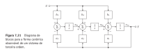
A função de transferência correspondente é: \[\begin{align*} G(s) = \frac{b_1s^2+b_2s+b_3}{s^3+a_1s^2+a_2s+a_3} \end{align*}\]
Note que:
- Os integradores não estão em série diretamente
- Entre cada integrador há um somador
- Apenas a saída (último integrador) é realimentada
- A realimentação é feita para cada um dos somadores, através dos ganhos do denominador
- A entrada se conecta a cada um dos somadores, através dos ganhos do numerador
A representação de estados é:
\[\begin{align*} \mathbf{\dot{x}} &= \left[ \begin{array}{rrr} -a_1 & 1 & 0\\ -a_2 & 0 & 1\\ -a_3 & 0 & 0\end{array} \right]\mathbf{{x}}+ \left[\begin{array}{rrr} b_1\\ b_2\\ b_3\end{array} \right]u\\ y &= \left[\begin{array}{ccc} 1 & 0 & 0\end{array}\right]\mathbf{x} \end{align*}\]
Note que: * Na matriz \(\mathbf{A}\), a primeira coluna é formada pelos coeficientes do denominador com sinal trocado, ordem crescente de potência de \(s\), de cima para baixo. * As colunas restantes podem ser montadas usando uma matriz identidade de ordem 2 e uma linha de zeros * A matriz \(\mathbf{B}\) é uma coluna formada pelos coeficientes do numerador, ordem crescente de potência de \(s\) de cima para baixo. * A matriz \(\mathbf{C}\) é uma linha de zeros, exceto pelo primeiro elemento igual a 1. * \(J=0\).
Exercício: Desenhe e obtenha as matrizes para o caso de 4a ordem.
A forma de observador é útil no projeto de observadores. Para o caso de 3a ordem anterior, a matriz de projeto é \[\begin{align*} \mathbf{A-LC} &= \left[ \begin{array}{rrr} -a_1-l_1 & 1 & 0\\ -a_2-l_2 & 0 & 1\\ -a_3-l_3 & 0 & 0\end{array} \right] \end{align*}\]
cuja equação característica é: \[\begin{align*} s^3+(a_1+l_1)s^2+(a_2+l_2)s+(a_3+l_3)=0 \end{align*}\]
Assim, podemos achar os ganhos do observador \(\mathbf{L}=\left[\begin{array}{ccc} l_1 & l_2 & l_3\end{array} \right]\) muito facilmente com o polinômio desejado.
5.6.3 Observabilidade
Observabilidade é a capacidade que um sistema possui em “permitir” que seus estados sejam estimados a partir apenas do conhecimento do sinal de saída.
Da mesma forma que a controlabilidade, podemos medir a observabilidade pela matriz de observabilidade e seu determinante.
A matriz de observabilidade é construída linha por linha, como: \[\begin{align*} \mathbf{\mathcal{O}} &= \left[ \begin{array}{c} \mathbf{C}\\ \mathbf{CA}\\ \mathbf{CA^2}\\ \vdots\\ \mathbf{CA^{n-1}} \end{array} \right] \end{align*}\]
Uma forma rápida de calcular essa matriz é usar a função obsv() da biblioteca control.
Um sistema SISO é observável se \(\det \mathbf{\mathcal{O}} \neq 0\). Se o sistema é MIMO, devemos olhar para o posto da matriz de observabilidade.
O sistema perde observabilidade quando há cancelamentos entre pólos zeros, de forma semalhante à controlabilidade. O sistema torna-se mais observável à medida que possui mais saídas mensuráveis.
Observe que existem diversos paralelos entre controlabilidade e observabilidade, inclusive nos cálculos.
Como já mostramos, os cálculos de observabilidades basicamente trocam a matriz \(\mathbf{B}\) pela transposta de \(\mathbf{C}\) e a matriz de estados pela sua transposta. Esse “paralelismo” é chamado de dualidade entre as duas propriedades.
5.7 Compensador dinâmico
Já aprendemos a projetar um regulador, que é um conjunto de ganhos que calcula a ação de controle usando os estados do sistema.
Também aprendemos a projetar um observador de estados, que é um sistema dinâmico cuja função é fornecer uma estimativa dos estados reais do sistema a partir do sinal de saída.
O compensador dinâmico é a junção destas duas ideias no mesmo sistema.
A Figura abaixo esquematiza todos os subsistemas e rotas de sinal com a estratégia adotada.
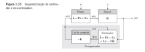
No final, nosso controlador projetado com essas abordagens é um único sistema, cujas equações de estado são: \[\begin{align*} \dot{\mathbf{x}}_e &= \mathbf{(A-BK-LC)}\mathbf{x}_e+\mathbf{L}y\\ u &= \mathbf{-K}\mathbf{x}_e \end{align*}\] onde \(\mathbf{x}_e\) é a estimativa dos estados do sistema pelo observador, \(\mathbf{K}\) e \(\mathbf{L}\) são respectivamente os ganhos do regulador e do observador. Note que a entrada do controlador é a saída da planta. Da mesma forma, o sinal de saída do controlador é o sinal de controle \(u\), que vai para a entrada da planta.
Perceba, que estas duas equações permitem realizar o controlador como um sistema entrada-saída normal, com uma função de transferência que basicamente dispensa as equações de estado, para fins de implementação. Esta função é: \[\begin{align*} Q(s) &= -\mathbf{K}(s\mathbf{I-A+BK+LC})^{-1}\mathbf{L} \end{align*}\]
Para fins de simulação, o sistema completo (planta+controlador) podem ser simulados usando um único conjunto de equações de estados: \[\begin{align*} \dot{\mathbf{x}} &= \mathbf{A}\mathbf{x}-\mathbf{BK}\mathbf{x_e}\\ \dot{\mathbf{x}}_e &= \mathbf{(A-BK-LC)}\mathbf{x}_e+\mathbf{LCx}\\ y&= \mathbf{Cx} \end{align*}\]
É possível demonstrar que os pólos de malha fechada compensado por um controlador dessa natureza são exatamente os pólos projetados pelo regulador de estados completo (isto é, considerando realimentação dos estados verdadeiros, mesmo que na prática não vá ser assim no final) e o pólos alocados para o observador.
Em outras palavras, o polinômio de malha fechada quando usamos um compensador que combina regulador+observador é simplesmente: \[\begin{align*} \alpha_{\text{mf}}(s) = \alpha_{\text{reg}}(s)\cdot \alpha_{\text{obs}}(s) \end{align*}\] onde “mf”, “reg” e “obs” indicam respectivamente “malha fechada”, “regulador” e “observador”.
O fato do projeto dos dois sistemas não “misturar” os pólos é um fato notável, que permite que os projetos sejam feitos de forma independente. Isso é chamado de principío da separação em teoria de controle.
5.7.1 Compensador com referência
Considerando a entrada \(u = Nr - \mathbf{K}\mathbf{x}_e\) e um sistema com \(D=0\), as equações de estado ficam:
\[\begin{align} \dot{\mathbf{x}} &= \mathbf{Ax}-\mathbf{BK}\mathbf{x}_e +\mathbf{B}Nr\\ \dot{\mathbf{x}}_e &= \mathbf{(A-BK-LC)}\mathbf{x}_e+\mathbf{L}y +\mathbf{B}Nr\\ y &= \mathbf{Cx} \end{align}\]
Para fins de simulação, é interessante blocar as matrizes para termos uma única representação global em malha fechada e podermos simular. \[\begin{align} \begin{bmatrix}\dot{\mathbf{x}}\\\dot{\mathbf{x}}_e\end{bmatrix} &= \begin{bmatrix} \mathbf{A} & \mathbf{-BK} \\ \mathbf{LC} & \mathbf{A-BK-LC}\end{bmatrix} \begin{bmatrix} {\mathbf{x}}\\{\mathbf{x}}_e\end{bmatrix} + \begin{bmatrix}\mathbf{B}N \\ \mathbf{B}N\end{bmatrix}r\\ y &= \begin{bmatrix}\mathbf{C} & \mathbf{0}\end{bmatrix}\begin{bmatrix} {\mathbf{x}}\\{\mathbf{x}}_e\end{bmatrix} \end{align}\]
Com essas matrizes também podemos calcular o valor do ganho de referência \(N\) a fim de fornecer erro de regime nulo para uma entrada degrau, da mesma forma que já foi explicado, porém usando as matrizes blocadas.
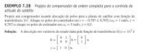
Imports
Declaração das matrizes e do sistema
A = np.array([[0,1],[0,0]])
B = np.array([[0],[1]])
C = np.array([[1,0]])
D = np.array([[0]])
sys = ct.ss(A,B,C,D)Controlabilidade
A matriz de controlabilidade é
\[ \mathcal{C} = \left[\begin{matrix}0 & 1.0\\1.0 & 0\end{matrix}\right] \]
O determinante é \(-1.0\), logo o sistema é controlável.
Observabilidade
A matriz de observabilidade é
\[ \mathcal{O} = \left[\begin{matrix}1.0 & 0\\0 & 1.0\end{matrix}\right] \]
O determinante é \(1.0\), logo o sistema é observável
Pólos do regulador:
Cálculo do regulador
\[ \mathbf{K} = \left[\begin{matrix}1.0 & 1.414\end{matrix}\right] \]
Pólos do observador:
Cálculo do observador
\[ \mathbf{L} = \left[\begin{matrix}5.0\\25.0\end{matrix}\right] \]
Função de transferência do controlador:
\[ Q(s) = \frac{- 40.35 s - 25.0}{1.0 s^{2} + 6.414 s + 33.07} \]
Matrizes em bloco para o sistema em malha fechada:
Amf = np.block([[A, -B@K],[L@C, A-B@K-L@C]])
Bmf = np.block([[B],[B]])
Cmf = np.block([[C, np.zeros(C.shape)]])Cálculo do ganho de referência:
Redefinir a matriz \(\mathbf{B}\) de malha fechada para introduzir o ganho \(N\)
Definie o sistema em malha fechada
Simula em malha fechada
Plota:
plt.plot(out.t,out.outputs)
plt.grid()
plt.xlabel('Tempo (seg)')
plt.ylabel('Saída')
plt.legend('y')
plt.show()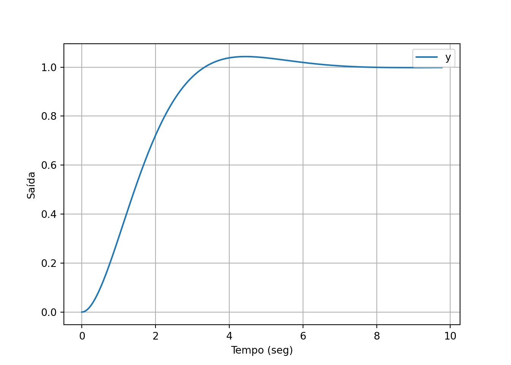
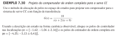
5.8 Controle integral
Sabemos que um integrador em malha aberta zera o erro de regime permanente quando fechamos a malha (para uma referência degrau pelo menos) e permite ao sistema rejeitar distúrbios (do tipo degrau). Portanto, a introdução de integradores na malha aberta é um aspecto desejável do projeto.
Para introduzir um integrador no espaço de estados, adicionamos um novo estado ao sistema, que representa a integral do erro à referência: \[\begin{align*} {e} = \int (r-y)dt \end{align*}\]
Supondo que \(y=\mathbf{Cx}\), a equação de estado deste novo sinal é: \[\begin{align*} \dot{e} = r-\mathbf{Cx} \end{align*}\]
Essa última equação aumenta a ordem do sistema em 1. O sistema em malha aberta agora fica: \[\begin{align*} \dot{\mathbf{x}} &= \mathbf{Ax}+\mathbf{B}u\\ \dot{e} &= r-\mathbf{Cx} \end{align*}\]
Em notação matricial em blocos temos: \[\begin{align*} \left[\begin{array}{c}\dot{\mathbf{x}}\\ \dot{e}\end{array}\right]&= \left[\begin{array}{cc}\mathbf{A} & \mathbf{0}\\-\mathbf{C} & 0\end{array}\right]\left[\begin{array}{c}{\mathbf{x}}\\ {e}\end{array}\right]+\left[\begin{array}{c}\mathbf{B}\\ 0\end{array}\right]u+\left[\begin{array}{c}\mathbf{0}\\ 1\end{array}\right]r \end{align*}\]
Dizemos que o sistema está aumentado
O algoritmo de controle integral consiste em fazer uma realimentação completa de todos os estados agora definidos. \[\begin{align*} u = -\mathbf{K}_a\mathbf{x}_a \end{align*}\]
Algoritmo de projeto:
Construa as matrizes aumentadas: \[\begin{align*} \mathbf{A}_a &= \left[\begin{array}{cc}\mathbf{A} & \mathbf{0}\\-\mathbf{C} & 0\end{array}\right]\\ \mathbf{B}_a &=\left[\begin{array}{c}\mathbf{B}\\ 0\end{array}\right] \end{align*}\]
Resolva o problema de regulação com \((\mathbf{A}_a, \, \mathbf{B}_a)\), para encontrar a matriz de ganhos aumentada \(\mathbf{K}_a\)
5.8.1 Escolha dos pólos
Perceba que a introdução de um integrador aumenta a ordem do sistema e isso vai requerer a especificação de pólos adicionais. Tente alocar estes pólos em posições estratégicas para não comprometer a dominância dos pólos desejados.
5.8.2 Equações de estado do compensador:
No controle integral, projetamos o observador de estados normalmente, como se o integrador não estivesse presente.
Supondo que os estados do observador são \(\mathbf{z}=\hat{\mathbf{x}}\), as equações do compensador serão:
\[\begin{align*} \dot{\mathbf{z}}&= (\mathbf{A}'-\mathbf{B}'\mathbf{K}_a-\mathbf{L}_0\mathbf{C}')\mathbf{z}+\mathbf{L}_1y+\mathbf{M}r\\ u &= \mathbf{-K}_a\mathbf{z} \end{align*}\]
As matrizes aumentadas são:
\[\begin{align} \mathbf{A}' &= \left[\begin{array}{ll} \mathbf{A} & \mathbf{0}_{n\times 1}\\ \mathbf{0}_{1\times n} & 0 \end{array}\right]\\ \mathbf{B}' &= \left[\begin{array}{cc} \mathbf{B} \\ {0} \end{array}\right]\\ \mathbf{C}' &= \left[\begin{array}{cc} \mathbf{C} & {0} \end{array}\right]\\ \mathbf{L}_0 &= \left[\begin{array}{cc} \mathbf{L} \\ {0} \end{array}\right]\\ \mathbf{L}_1 &= \left[\begin{array}{rr} \mathbf{L} \\ {-1} \end{array}\right]\\ \mathbf{M} &= \left[\begin{array}{cc} \mathbf{0}_{n\times 1} \\ 1 \end{array}\right] \end{align}\]
É interessante observar que esse compensador requer duas entradas distintas para ser realizado: a referência e a saída da planta.
Lembre-se que do ponto de vista do controlador, a saída é o sinal de controle \(u\). Portanto, a saída da planta \(y\) é vista por ele como uma entrada, assim como a referência \(r\).
Podemos enxergá-lo através de duas funções de transferência: uma de \(Y\) para \(U\) e outra de \(R\) para \(U\). Assim, a saída do controlador poderia ser descrita como:
\[\begin{align} U(s) = C_1(s)Y(s)+C_2(s)R(s) \end{align}\]
As funções de transferência \(C_1(s)\) e \(C_2(s)\) podem ser calculadas pelas matrizes usando a expressão que já estudamos.
Do ponto de vista de fluxo de sinal, o sistema controlador funciona conforme o diagrama de blocos a seguir
Figure 5.1: Controle integral
Esse diagrama pode ser modificado para utilizar a estrutura convencional de controle com realimentação unitária, mas nesse caso, o bloco que alimenta a referência sofre modificação (desafio: verifique que diagrama é esse)
5.8.3 Simulação em malha fechada
Com a realimentação do sistema aumentado, as equações em malha fechada serão:
\[\begin{align*} \dot{\mathbf{x}} &= \mathbf{A}\mathbf{x}-\mathbf{B}\mathbf{K}_a\mathbf{z}\\ \dot{\mathbf{z}} &= (\mathbf{A'}-\mathbf{B'}\mathbf{K}_a-\mathbf{L}_0\mathbf{C}')\mathbf{z}+\mathbf{L}_1\mathbf{C}\mathbf{x}+\mathbf{M}\, r\\ y&= \mathbf{Cx} \end{align*}\]Matrizes de malha fechada:
\[\begin{align} \mathbf{A}_{\text{mf}} &= \left[\begin{array}{cc} \mathbf{A} & -\mathbf{B}\mathbf{K}_a\\ \mathbf{L}_1\mathbf{C} & \mathbf{A}'-\mathbf{B}'\mathbf{K}_a-\mathbf{L}_0\mathbf{C}' \end{array}\right]\\ \mathbf{B}_{\text{mf}} &= \left[\begin{array}{cc} \mathbf{0}_{n\times 1} \\ \mathbf{M} \end{array}\right] = \left[\begin{array}{cc} \mathbf{0}_{2n\times 1} \\ 1 \end{array}\right]\\ \mathbf{C}_{\text{mf}} &= \left[\begin{array}{cc} \mathbf{C} & \mathbf{0}_{1\times (n+1)} \end{array}\right]\\ \mathbf{D}_{\text{mf}} &= 0 \end{align}\]
Perceba que a realimentação de estados é feita através do sinal \(u\). O sinal \(r\), de referência não deve ser usado para realimentar.
Exemplo:
Construa um compensador com controle integral para o sistema \[\begin{align} G(s) = \frac{10}{(s+1)(s+2)} \end{align}\] para que \(\xi = 0.7\) e \(\omega_n=2\).
Imports
Declara o sistema
\[\begin{align} \dot{\mathbf{x}} &= \left[\begin{matrix}-3 & -2\\1 & 0\end{matrix}\right]\mathbf{x} + \left[\begin{matrix}1\\0\end{matrix}\right]u\\ y &= \left[\begin{matrix}0 & 10\end{matrix}\right]\mathbf{x} \end{align}\]
Matrizes aumentadas
\[\begin{align} \mathbf{A}_a &= \left[\begin{matrix}-3.0 & -2.0 & 0\\1.0 & 0 & 0\\0 & -10.0 & 0\end{matrix}\right]\\ \mathbf{B}_a &= \left[\begin{matrix}1\\0\\0\end{matrix}\right] \end{align}\]
Especificações
Pólos desejados: \[ s = -1.4 \pm j 1.4283 \]
Como o projeto ficou de terceira ordem, precisamos completar com um pólo. Para não interferir na dominância, vamos alocá-lo com uma frequência natural 5 vezes maior. Assim, o pólo extra será \(s=-10\).
Projeto do ganho aumentado com Ackermann
\[\begin{align} \mathbf{K}_a = \left[\begin{matrix}9.8 & 30.0 & -4.0\end{matrix}\right] \end{align}\]
Note que: \[\begin{align} \mahtbf{K} &= \left[\begin{matrix}9.8 & 30.0\end{matrix}\right]\\ K_i &= -4.0 \end{align}\]
Para o projeto do observador, podemos usar pólos distantes em um fator de 10 dos pólos originais.
Projeto do observador
\[\begin{align} \mathbf{L} = \left[\begin{matrix}32.3\\2.5\end{matrix}\right] \end{align}\]
Vamos agora escrever as equações de estado do controlador.
Matrizes auxiliares:
n = 2
Al = np.block([[A,np.zeros((n,1))],[np.zeros((1,n+1))]])
Bl = Ba
Cl = np.block([C,0])
L0 = np.block([[L],[0]])
L1 = np.block([[L],[-1]])
M = np.block([[np.zeros((n,1))],[1]])Matrizes do controlador
Ac = np.block([[A-B@K-L@C, -B*Ki], [np.zeros((1,3))]])
B1 = np.block([[L],[-1]])
B2 = np.block([[np.zeros((2,1))],[-1]])
Cc = np.block([-K, -Ki])
D1 = np.array([[0]])
D2 = D1Equações do controlador: \[\begin{align} \dot{\mathbf{z}} &= \left[\begin{matrix}-12.8 & -355.0 & 4.0\\1.0 & -25.0 & 0\\0 & 0 & 0\end{matrix}\right] \mathbf{z} + \left[\begin{matrix}32.3\\2.5\\-1.0\end{matrix}\right] y\\ u &= \left[\begin{matrix}-9.8 & -30.0 & 4.0\end{matrix}\right] \mathbf{z} \end{align}\]
Funções de transferência do controlador. Primeiro, da saída do sistema \(y\) para o sinal de controle \(u\).
Atenção ao índice utilizado para a matriz Bc.
\[\begin{align} C_1(s) &= \frac{- 395.54 s^{2} - 1257.0 s - 1600.0}{1.0 s^{3} + 37.8 s^{2} + 675.0 s} \end{align}\]
Depois, a função entre o sinal de controle e a referência:
\[\begin{align} C_2(s) &= \frac{- 4.0 s^{2} - 112.0 s - 1600.0}{1.0 s^{3} + 37.8 s^{2} + 675.0 s} \end{align}\]
Pólos e zeros do controlador:
## array([-18.9+17.82666542j, -18.9-17.82666542j, 0. +0.j ])## array([-1.58896698+1.23299912j, -1.58896698-1.23299912j])## array([-14.+14.28285686j, -14.-14.28285686j])Para verificar o projeto, montamos um sistema em malha fechada e simulamos uma referência degrau.
Matrizes em malha fechada:
Amf = np.block([[A , -B@Ka ] , [ L1@C , Al-Bl@Ka-L0@Cl ] ])
Bmf = np.block([[np.zeros(B.shape)],[M]])
Cmf = np.block([C, np.zeros([1,3])])
Dmf = 0Sistema e simulação
Gráficos
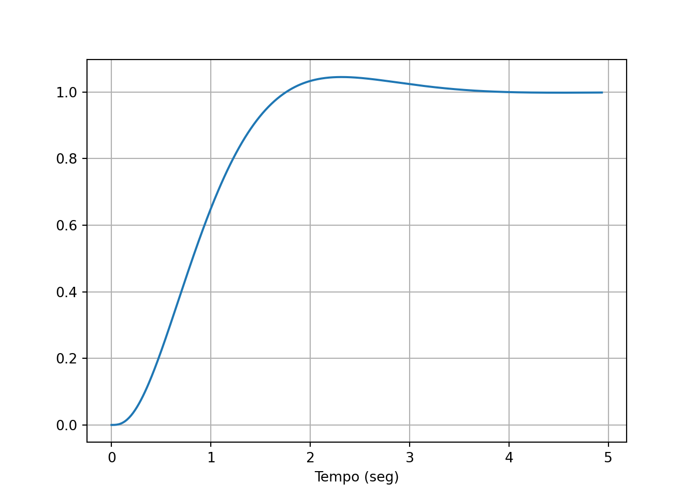
É sempre prudente analisar a resposta também em termos de pólos e zeros de malha fechada. Isso é especialmente útil quando a simulação parece não exibir o comportamento que foi solicitado no projeto.
## Eigenvalue (pole) Damping Frequency
## -14 +14.28j 0.7 20
## -14 -14.28j 0.7 20
## -10 1 10
## -1.4 +1.428j 0.7 2
## -1.4 -1.428j 0.7 2## array([-14.+14.28285686j, -14.-14.28285686j])Devemos analisar este resultado buscando possíveis cancelamentos entre pólos e zeros. Observe também que a planta não possui zeros. Os zeros que surgem na malha são provenientes do próprio controlador.
Também podemos calcular a resposta de malha fechada pelas funções de transferência.
Função de malha fechada.
Pólos de malha fechada; amortecimento e frequência natural.
## Eigenvalue (pole) Damping Frequency
## -18.9 +17.83j 0.7275 25.98
## -18.9 -17.83j 0.7275 25.98
## -14 +14.28j 0.7 20
## -14 -14.28j 0.7 20
## -10 1 10
## -1.4 +1.428j 0.7 2
## -1.4 -1.428j 0.7 2
## 0 1 0
##
## C:\Users\rafae\AppData\Local\Programs\Python\PYTHON~1\Lib\site-packages\control\lti.py:118: RuntimeWarning: invalid value encountered in divide
## zeta = -real(splane_poles)/wnZeros de malha.
## array([-18.9+17.82666542j, -18.9-17.82666542j, -14. +14.28285686j,
## -14. -14.28285686j, 0. +0.j ])A simulação com função de transferência deve fornecer o mesmo resultado.
Sistema e simulação
Gráficos
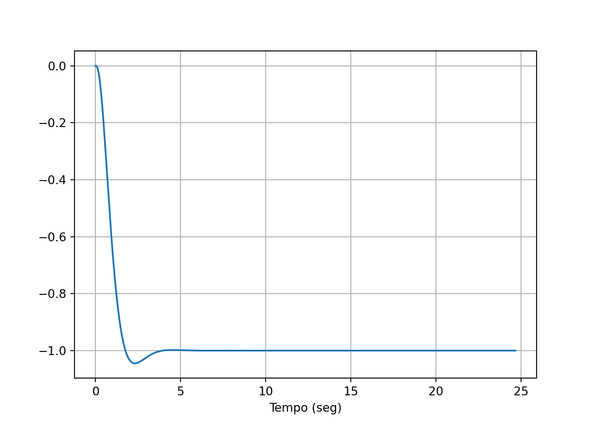
Podemos simular uma perturbação no sistema, adicionando um sinal de entrada novo. Na representação de estados isso pode ser feito adicionando uma nova coluna na matriz \(\mathbf{B}\) de malha fechada.
A simulação mostra a ação do controle integral, fazendo o sistema retornar ao setpoint. Note que isso não aconteceria se a mesma perturbação fosse aplicada em um sistema sem controle integral.